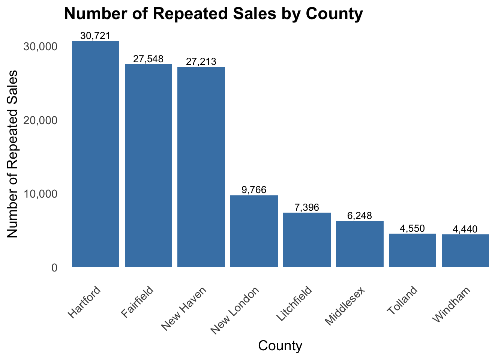
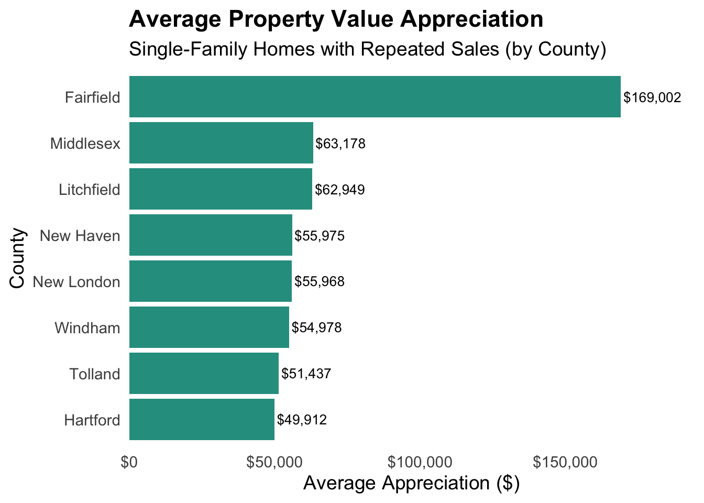
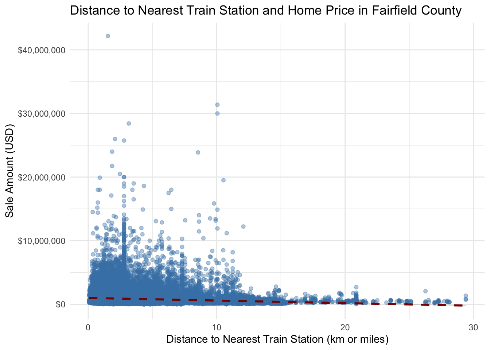
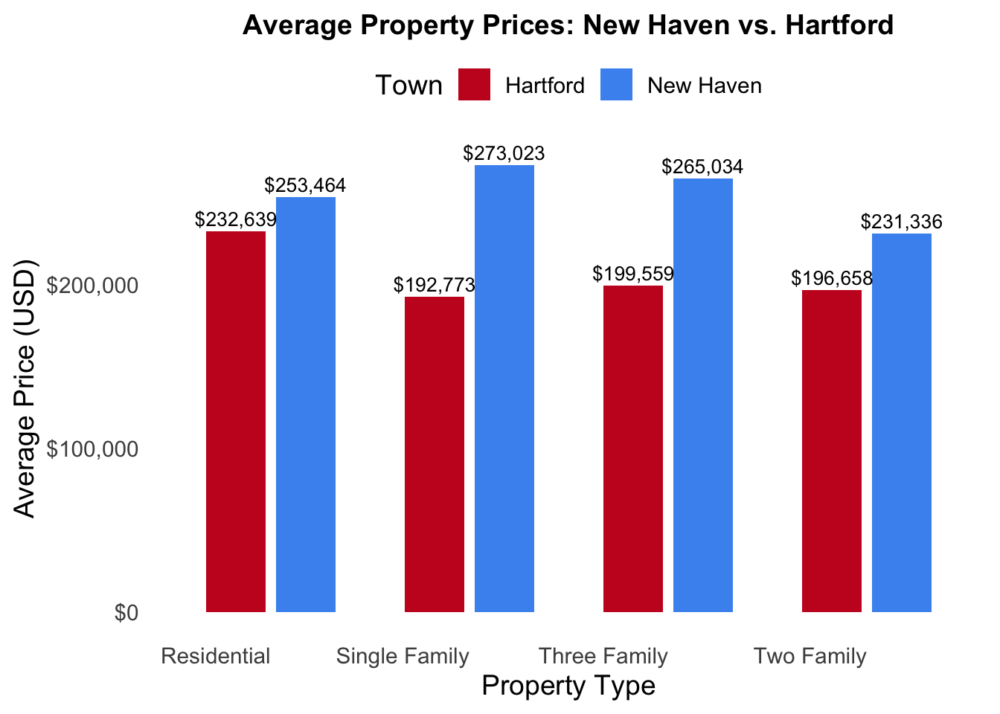
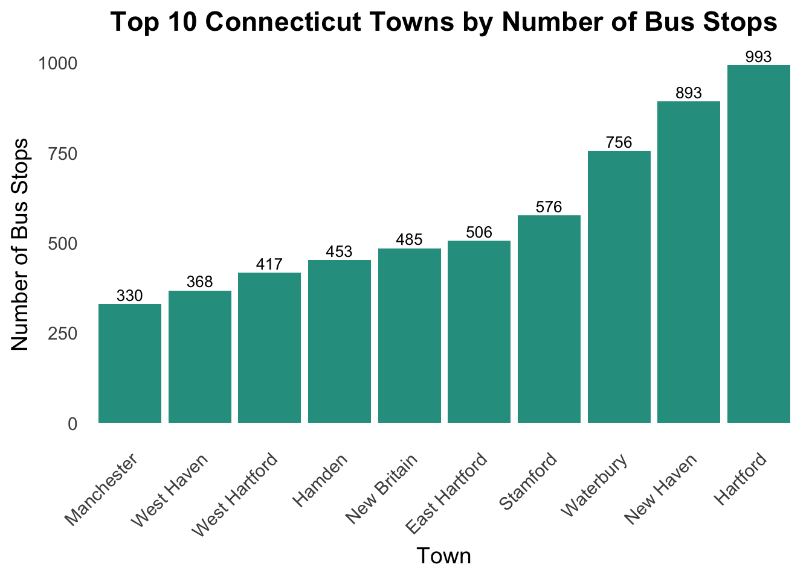

The spatial distribution of real estate activity across Connecticut reveals a notable geographic trend: counties located closer to major urban economic centers, particularly New York City, exhibit stronger market performance. Fairfield County, situated in the southwestern corner of the state, stands out as the most active real estate market. According to the dataset, it recorded 211,845 property transactions between 2001 and 2022—the highest among all counties—spanning residential, commercial, vacant land, and public utility properties(see Table 1). This market strength is accompanied by the highest total dollar volume of transactions, signaling both high demand and high property values.
A key differentiation for Fairfield is its geographical proximity to NYC and accessibility via the Metro-North Railroad, which positions it as a prime location for commuters seeking suburban living with urban job opportunities. This suggests that connectivity to economic hubs may play a significant role in driving property values and transaction volumes.
Motivated by this observation, this analysis aims to examine how distance from New York City correlates with real estate market activity across Connecticut counties. By quantifying this relationship, we can better understand the extent to which geographic accessibility influences housing demand and pricing—offering valuable insights for urban planners, real estate developers/analysts, and policy makers.
Data Acquisition
Connecticut Real Estate Sales Dataset
The primary data source used in our analysis is available at: CT Real Estate Sales
Code
# Load relevant packageslibrary(readr)library(tidyverse)library(stringr)library(ggplot2)library(DT)library(scales)library(gt)library(readxl) library(scales) library(sf) library(tmaptools)library(tigris) library(tmap)library(leaflet)library(sp)library(ggthemes)library(knitr)library(kableExtra)# Direct download link for the sales dataurl <-"https://data.ct.gov/api/views/5mzw-sjtu/rows.csv?accessType=DOWNLOAD"data_dir <-"data/course_project"file_name <-file.path(data_dir, "ct_sales.csv")if(!dir.exists(data_dir)){dir.create(data_dir, showWarnings=FALSE, recursive=TRUE)}# Download file only if it doesn't already existif(!file.exists("data/course_project/ct_sales.csv")){download.file(url, destfile = file_name, mode ="wb", quiet =TRUE)}# Read sales data into Rct_sales <-read_csv(file_name)# Format `ct_sales` column names colnames(ct_sales) <-tolower(gsub("\\.", "_", colnames(ct_sales)))colnames(ct_sales) <-tolower(gsub(" ", "_", colnames(ct_sales)))# Create a unique ID for each transaction to facilitate easier referencing # and joining with other data sourcesct_sales <- ct_sales |>mutate(ref_id =row_number() ) |>select( ref_id,everything() )# Update the town name for records with "unknown" valuect_sales <- ct_sales |>mutate(town =case_when( town =="***Unknown***"~"East Hampton",TRUE~ town ) )# Map each town to its corresponding county ct_town_county_codes<-read.csv("~/STA9750/STA9750-2025-SPRING/ct_town_county_codes.csv")ct_sales <- ct_sales |>left_join( ct_town_county_codes |>select(town_name, county),by =c("town"="town_name") )# Display the first ten rows of the data setkable(head(ct_sales, 10), caption ="First 10 Rows of CT Real Estate Sales") |>kable_styling(bootstrap_options =c("striped", "hover"), full_width = F)
# Download Metro-North stops gtfs_url <-"https://rrgtfsfeeds.s3.amazonaws.com/gtfsmnr.zip"zip_path <-file.path(data_dir, "gtfsmnr.zip")unzip_file_path <-file.path(data_dir, "metro-north")stops_file <-file.path(unzip_file_path, "stops.txt")if(!dir.exists(data_dir)){dir.create(data_dir, showWarnings =FALSE, recursive =TRUE)}if(!file.exists(stops_file)){download.file(gtfs_url, destfile = zip_path, mode ="wb", quiet =TRUE)# Unzip filesunzip(zipfile = zip_path, exdir = unzip_file_path)}# Read Metro-North stops data into Rstops <-read.delim(stops_file, header =TRUE, sep =",", stringsAsFactors =FALSE)# Connecticut towns' geometry ct_towns_geom <- ct_towns |>select(STATEFP, NAME)library(tigris)# # ny_towns <- county_subdivisions(state = "NY")# # ny_towns_geom <- ny_towns |> select(STATEFP, NAME)# saveRDS(ny_towns_geom, "ny_towns_geom.rds")ny_towns_geom <-readRDS("ny_towns_geom.rds")ct_ny_towns_geom <-bind_rows(ct_towns_geom, ny_towns_geom)stops <- stops |>select(stop_id, stop_name, stop_lon, stop_lat)# Create sf object of Metro-North stopsstops_sf <-st_as_sf(stops, coords =c("stop_lon", "stop_lat"), crs =st_crs(ct_towns))# Add the state and the town for each stationstops <-st_join(stops_sf, ct_ny_towns_geom, join = st_within) |>mutate(lon =st_coordinates(geometry)[, 1],lat =st_coordinates(geometry)[, 2] ) |>st_drop_geometry() |>rename(town = NAME) |>mutate(state =case_when( STATEFP =="09"~"CT", STATEFP =="36"~"NY",TRUE~"" ) ) |>select(-STATEFP) |>inner_join(stops, by ="stop_id") |>rename(stop_name = stop_name.x ) |>select(-stop_name.y)stops_sf <-st_as_sf(stops, coords =c("stop_lon", "stop_lat"), crs =st_crs(ct_towns))# Select the first ten rows to displayto_display <- stops |>select(stop_id, stop_name, town, state, stop_lon, stop_lat) |>head(10)# Display the first ten rows of the data setkable(to_display, caption ="First 10 Rows of Metro-North Stations") |>kable_styling(bootstrap_options =c("striped", "hover"), full_width = F)
First 10 Rows of Metro-North Stations
stop_id
stop_name
town
state
stop_lon
stop_lat
1
Grand Central
Manhattan
NY
-73.97706
40.75300
4
Harlem-125 St
Manhattan
NY
-73.93915
40.80516
622
Yankees-E 153 St
Bronx
NY
-73.92990
40.82530
184
Highbridge Yard
Bronx
NY
-73.93150
40.83590
9
Morris Heights
Bronx
NY
-73.91958
40.85425
10
University Heights
Bronx
NY
-73.91312
40.86225
11
Marble Hill
Manhattan
NY
-73.91094
40.87433
14
Spuyten Duyvil
Bronx
NY
-73.92145
40.87824
16
Riverdale
Bronx
NY
-73.91413
40.90398
17
Ludlow
Yonkers
NY
-73.90461
40.92497
Download CT transit Data
Code
# GTFS file URL for CT transit data ct_bus_url <-"https://www.cttransit.com/sites/default/files/gtfs/googlect_transit.zip"zip_file_path <-file.path(data_dir, "googlect_transit.zip")unzip_file_path <-file.path(data_dir, "ct_bus")# Check files files_to_unzip <-c("stops.txt", "trips.txt", "stop_times.txt")files_to_check <-file.path(unzip_file_path, files_to_unzip)if(!all(file.exists(files_to_check))){download.file(ct_bus_url, destfile = zip_file_path, mode ="wb", quiet =TRUE)# Unzipunzip(zipfile = zip_file_path, exdir = unzip_file_path)}# Read relevant files into Rstops_file <-file.path(unzip_file_path, "stops.txt")bus_stops <-read.delim(stops_file, header =TRUE, sep =",", stringsAsFactors =FALSE) |>select( stop_id, stop_code, stop_name, stop_lat, stop_lon, )stop_times_file <-file.path(unzip_file_path, "stop_times.txt")stop_times <-read.delim(stop_times_file, header =TRUE, sep =",",stringsAsFactors =FALSE)trips_file <-file.path(unzip_file_path, "trips.txt")trips <-read.delim(trips_file, header =TRUE, sep =",", stringsAsFactors =FALSE)# Map bus stop to town bus_stops_sf <-st_as_sf(bus_stops, coords =c("stop_lon", "stop_lat"), crs =st_crs(ct_towns))bus_stops <-st_join(bus_stops_sf, ct_ny_towns_geom, join = st_within) |>mutate(lon =st_coordinates(geometry)[, 1],lat =st_coordinates(geometry)[, 2] ) |>st_drop_geometry() |>rename(town = NAME) |>mutate(state =case_when( STATEFP =="09"~"CT", STATEFP =="36"~"NY",TRUE~"" ) ) |>select(-STATEFP)# Combine these data sets to obtain trip-level bus data in Connecticutbus_trip_stop_data <- stop_times |>left_join(bus_stops, by ="stop_id") |>left_join(trips, by ="trip_id") |>select( trip_id, route_id, block_id, shape_id, stop_sequence, stop_id, arrival_time, departure_time, shape_dist_traveled, stop_name, town, lon, lat, state, )# Display the first ten rowskable(head(bus_trip_stop_data, 10), caption ="First 10 Rows of CT Bus Trips") |>kable_styling(bootstrap_options =c("striped", "hover"), full_width = F)
First 10 Rows of CT Bus Trips
trip_id
route_id
block_id
shape_id
stop_sequence
stop_id
arrival_time
departure_time
shape_dist_traveled
stop_name
town
lon
lat
state
1796748
15182
130551
157578
1
8558
17:15:00
17:15:00
NA
Church St @ George St
New Haven
-72.92707
41.30416
CT
1796748
15182
130551
157578
2
8557
17:18:00
17:18:00
0.5315
College St @ George St
New Haven
-72.93073
41.30468
CT
1796748
15182
130551
157578
3
5769
17:18:19
17:18:19
0.6892
S Frontage @ College St
New Haven
-72.93133
41.30342
CT
1796748
15182
130551
157578
4
4744
17:28:56
17:28:56
5.9520
Frontage Rd @ Kimberly Ave
East Haven
-72.87874
41.28577
CT
1796748
15182
130551
157578
5
4743
17:29:55
17:29:55
6.4437
Saltonstall Pkwy @ Forbes Pl
East Haven
-72.87369
41.28361
CT
1796748
15182
130551
157578
6
4742
17:30:49
17:30:49
6.8914
Saltonstall Pkwy @ Sanford St
East Haven
-72.86922
41.28140
CT
1796748
15182
130551
157578
7
4745
17:31:22
17:31:22
7.1657
Saltonstall Pkwy @ Hemingway Ave
East Haven
-72.86672
41.27981
CT
1796748
15182
130551
157578
8
10488
17:32:21
17:32:21
7.6591
Saltonstall Pkwy @ Main St
East Haven
-72.86182
41.27727
CT
1796748
15182
130551
157578
9
4612
17:32:35
17:32:35
7.7823
W Main St @ Dominican Rd
Branford
-72.86029
41.27732
CT
1796748
15182
130551
157578
10
4613
17:33:07
17:33:07
8.0512
W Main St @ Rose Hill Rd
Branford
-72.85712
41.27746
CT
Data Cleaning
Identify wrong/incorrect/duplicate entries. Use anti_join to remove these records from our ct_sales data.
Remove properties whose sale prices are not comparable to similar properties due to foreclosure, private sale, change in property or other reasons based on the information provided in non_use_code column.
Code
# Duplicates, incorrect property values, etc to_remove <- ct_sales |>mutate(concerning =case_when(str_detect(opm_remarks, regex("duplicate|incorrect|wrong|error|missing", ignore_case =TRUE)) ~"Yes",TRUE~"No")) |>filter(concerning =="Yes")# Use anti_join to remove these incorrect/duplicate from `ct_sales` ct_sales <- ct_sales |>anti_join(to_remove, by =c("serial_number", "address"))# Remove properties with non_use_code ct_sales <- ct_sales |>filter(is.na(non_use_code))# Remove transactions with `sale_amount` 0 ct_sales <- ct_sales |>filter(sale_amount >10000)
Data Preprocessing
Proximity to NYC: A Grand Central-Based Metric for Measuring Access to the City
In this section, we first define the metric of proximity to NYC using Grand Central Terminal Station as the anchor point. Then, we calculate the distance from each property in ct_sales to it.
To calculate the distance, we address the following issues:
Properties with missing geographic coordinates:
Use matching street_name and town to impute the missing values
For the remaining cases, impute coordinates using town-level geometry data
Properties with incorrect geographic coordinates:
Identify them using functions from the sf library
Correct them with town-level geometry
Verify Mappings Between Property Addresses and Their Geographic Coordinates
To perform the verification, we first decompose the town-level geometries into points and compute the distance range from Grand Central Terminal. This serves as a benchmark to assess whether the mapping of geographic coordinates and addresses is accurate.
Code
# Mutate a variable called `street_name` for `location` imputation laterct_sales <- ct_sales |>mutate(street_name =str_remove(address, "^\\d+\\s+"), street_name =str_remove(street_name, "#.*$"),street_name =str_remove(street_name, "(?<!ROUTE\\s)[A-Z]\\d+$"),street_name =str_remove(street_name, " UNIT.*"),street_name =case_when(str_detect(street_name, regex("\\d+$")) & (!str_detect(street_name, regex("\\bROUTE\\b", ignore_case =TRUE))) ~str_replace( street_name, "(RD|ROAD|DRIVE|DR|AV|AVE|AVENUE|ST|STREET|LANE|LN|LA|CIR|CT|COURT|TE).*","\\1" ),TRUE~ street_name ),street_name =case_when(str_detect(street_name, regex("\\d+$")) ~str_remove(street_name, "\\s*U(N)?\\s*\\d+$"),TRUE~ street_name ),street_name =case_when(str_detect(street_name, regex("^[A-Za-z]")) ~ street_name,is.na(str_extract(street_name, "(?<=\\s)[A-Za-z].*")) ~ street_name,TRUE~str_extract(street_name, "(?<=\\s)[A-Za-z].*") ) ) # Select the first ten rows of data with the new variable includedsample_data_to_display <- ct_sales |>select(ref_id, address, town, county, street_name, sale_amount) |>head(10)rownames(sample_data_to_display) <-NULLkable(sample_data_to_display) |>kable_styling(bootstrap_options =c("striped", "hover"), full_width = F)
ref_id
address
town
county
street_name
sale_amount
1
323 BEAVER ST
Ansonia
New Haven
BEAVER ST
248400
2
152 JACKSON ST
Ansonia
New Haven
JACKSON ST
239900
3
230 WAKELEE AVE
Ansonia
New Haven
WAKELEE AVE
325000
4
57 PLATT ST
Ansonia
New Haven
PLATT ST
202500
5
12 BYRON DRIVE
Avon
Hartford
BYRON DRIVE
362500
6
245 NEW ROAD
Avon
Hartford
NEW ROAD
400000
7
63 NORTHGATE
Avon
Hartford
NORTHGATE
775000
8
46 RATLUM MTN RD
Barkhamsted
Litchfield
RATLUM MTN RD
415000
9
34 LASKY ROAD
Beacon Falls
New Haven
LASKY ROAD
243000
10
9 AVON COURT
Beacon Falls
New Haven
AVON COURT
100000
Code
# Create sf object to compute the distance from Grand Central Terminal ct_sales_sf <- ct_sales |>filter(!is.na(location)) |>mutate(location =st_as_sfc(location, crs =st_crs(ct_towns))) |>st_as_sf() # Create Grand Central Terminal sf objectgrand_central <-st_sfc(st_point(c(-73.977229, 40.752726)), crs =st_crs(ct_sales_sf)) |>st_sf()grand_central <-st_transform(grand_central, crs =st_crs(ct_sales_sf)) # These are the mappings that need verificationto_verify <- ct_sales_sf |>mutate(point_dist_to_nyc =round(as.numeric(st_distance(location, grand_central)/1000), 2)) |>mutate(lon =st_coordinates(location)[, 1],lat =st_coordinates(location)[, 2] ) |>st_drop_geometry() |>select(ref_id, address, street_name, town, lon, lat, point_dist_to_nyc)rownames(to_verify) <-NULL
Define a function to compute the distance range for each town from Grand Central Terminal
Code
# Define a function to compute the distances from each point in the town # geometry and determine the distance rangecompute_town_dist_range <-function(town_name){ vertices <- towns_sf |>filter(NAME == town_name) |>st_geometry() |>st_cast("POLYGON") |>st_cast("LINESTRING") |>st_cast("POINT")# Compute distances in kilometers distances <-as.numeric(st_distance(vertices, grand_central))/1000data.frame(town = town_name,min_dist_km =round(min(distances), 2),max_dist_km =round(max(distances), 2) )}towns_sf <- ct_towns |>filter(NAME !="County subdivisions not defined")town_list <- towns_sf |>st_drop_geometry() |>select(NAME) |>pull()# Find the distance range for each town from the anchor point: Grand Central Terminal town_distance_range <- town_list |>map(compute_town_dist_range) |>bind_rows()town_distance_range <- town_distance_range |>mutate("TOWN"= town)# Verify mappings_verified <- to_verify |>left_join(town_distance_range, by ="town") |>mutate(is_valid_location =between(point_dist_to_nyc, min_dist_km, max_dist_km) )# Display the first ten rows of verified coordinates first10_mappings_verified <- mappings_verified |>select(address, town, point_dist_to_nyc, min_dist_km, max_dist_km, is_valid_location) |>head(10)rownames(first10_mappings_verified) <-NULLkable(first10_mappings_verified, caption ="First 10 Rows of Verified Mappings") |>kable_styling(bootstrap_options =c("striped", "hover"), full_width = F)
First 10 Rows of Verified Mappings
address
town
point_dist_to_nyc
min_dist_km
max_dist_km
is_valid_location
323 BEAVER ST
Ansonia
101.11
98.59
103.19
TRUE
12 BYRON DRIVE
Avon
145.97
144.31
154.63
TRUE
63 NORTHGATE
Avon
146.87
144.31
154.63
TRUE
55 CANNON ST
Bridgeport
81.27
76.02
86.77
TRUE
540 JAMES ST
Bridgeport
80.67
76.02
86.77
TRUE
126 KENNEDY DR
Bridgeport
81.60
76.02
86.77
TRUE
206 COVEY RD
Burlington
142.71
134.49
146.75
TRUE
477 PERKINS ST
Bristol
134.69
129.00
140.65
TRUE
10 EBERT DR., #52
Bristol
133.44
129.00
140.65
TRUE
108 COBB CITY ROAD
Colebrook
159.96
150.87
164.24
TRUE
Handling Missing Geographic Data
Impute missing values of location based on verified correct mappings from the matching street name and town.
Code
# Create a unique street identifier by combining street_name and townct_sales <- ct_sales |>mutate(street_name1 =paste(street_name, town))# Create a reference for `location` imputation using the verified mappings # between `address` and `location`loc_imp_ref <- mappings_verified |>filter(is_valid_location ==TRUE) |>mutate(street_name1 =paste(street_name, town) ) |>select(ref_id, street_name1, lon, lat) |>distinct(street_name1, .keep_all =TRUE)# Begin by imputing `location` values using verified coordinates matched by # `street_name` and `town`ct_sales_imputed <- ct_sales |>filter(is.na(location)) |>left_join(loc_imp_ref, by ="street_name1") |>rename(ref_id = ref_id.x ) |>select(-ref_id.y)# Add additional notes regarding the `location` values ct_sales_imputed <- ct_sales_imputed |>mutate(is_valid_location =case_when(!is.na(lon) &!is.na(lat) ~"value imputed based on matching street name and town",TRUE~"to fill with town-level geometry" ) )# This subset of the data contains records whose location values were # verified in the previous stepct_sales_verified <- ct_sales |>filter(!is.na(location)) |>mutate(lon =as.numeric(str_extract(location, "(?<=\\().*?(?=\\s)")),lat =as.numeric(str_extract(location, "(?<=\\s)-?\\d+\\.\\d+(?=\\))")) ) |>left_join(mappings_verified |>select(ref_id, is_valid_location),by ="ref_id") |>mutate(is_valid_location =as.character(is_valid_location) )# Combine `ct_sales_imputed` and `ct_sales_verified`ct_sales <-bind_rows(ct_sales_verified, ct_sales_imputed) |>arrange(ref_id)# Last, for properties with incorrect mapping and no matching street name and town, impute the `location` values using the town centroidtown_centroid <- ct_towns |>filter(NAME !="County subdivisions not defined") |>mutate(center =st_centroid(geometry), centroid_lon =st_coordinates(center)[, 1],centroid_lat =st_coordinates(center)[, 2] ) |>st_drop_geometry() |>select(NAME, centroid_lon, centroid_lat) |>rename(town = NAME)ct_sales <- ct_sales |>left_join(town_centroid, by ="town") |>mutate(lon =case_when( is_valid_location %in%c("FALSE", "to fill with town-level geometry") ~ centroid_lon,TRUE~ lon ),lat =case_when( is_valid_location %in%c("FALSE", "to fill with town-level geometry") ~ centroid_lat,TRUE~ lat ) ) |>mutate(is_valid_location =case_when( is_valid_location =="FALSE"~"corrected using the town centroid geometry", is_valid_location =="to fill with town-level geometry"~"value imputed using the town centroid geometry",TRUE~ is_valid_location ) )ct_sales <- ct_sales |>select(-centroid_lon, -centroid_lat)
Handling Categorical Missing Data: Property Type
Code
ct_sales <- ct_sales |>mutate(address1 =paste(address, town))# Properties with missing property type property_missing_type <- ct_sales |>filter(is.na(property_type))property_w_type <- ct_sales |>filter(!is.na(property_type))# Find common properties in both categories common_properties <- property_missing_type |>select(address1) |>distinct(address1) |>inner_join(property_w_type |>select(address1, property_type, residential_type), by ="address1") |>distinct(address1, .keep_all =TRUE)# Fill in `property_type` by performing left joining with `common_properties`property_missing_type <- property_missing_type |>left_join(common_properties, by ="address1") |>mutate(property_type.x = property_type.y,residential_type.x = residential_type.y ) |>select(-property_type.y, - residential_type.y) |>rename(property_type = property_type.x,residential_type = residential_type.x ) # Combine updated properties with the existing `property_w_type` data frameproperty_w_type <-bind_rows( property_missing_type |>filter(!is.na(property_type)), property_w_type)# New subset of properties without `property_type`property_missing_type <- property_missing_type |>filter(is.na(property_type))ct_sales_cleaned <-bind_rows(property_w_type, property_missing_type) |>arrange(ref_id)
Exploratory Data Analysis
1. What is the total number of real estate transactions and the corresponding aggregate sale volume by county?
Fairfield County leads Connecticut in real estate activity, recording over 211,845 transactions and a total sales volume of $153 billion—nearly triple that of any other county. Hartford and New Haven follow with significant volumes of $58 billion and $53 billion, respectively, while the remaining counties contribute more modestly to the state’s overall market.
Code
# Count the total number of recorded properties by county n_by_county <- ct_sales_cleaned |>group_by(county) |>summarise(n =n(), total_billion =round(sum(sale_amount)/1e9, 0)) n_by_county |>mutate(n =comma(n),total_billion =dollar(total_billion, suffix ="B") ) |>kable(col.names =c("County", "Transactions", "Total Volume (Billion)"),caption ="<b><span style='color:black'>Table 1: Real Estate Transactions and Volume by County (2001–2022)</span></b>",escape =FALSE ) |>kable_styling(bootstrap_options =c("striped", "hover"),full_width =FALSE )
Table 1: Real Estate Transactions and Volume by County (2001–2022)
County
Transactions
Total Volume (Billion)
Fairfield
211,845
$153B
Hartford
193,427
$58B
Litchfield
46,487
$15B
Middlesex
41,392
$13B
New Haven
175,862
$53B
New London
59,965
$17B
Tolland
29,732
$8B
Windham
24,390
$5B
2. How many repeated sales are there in each county?
Hartford County recorded the highest number of repeated sales with 30,721 transactions, followed closely by Fairfield County with 27,548. New Haven County also demonstrated strong market activity, with 27,213 repeated transactions during the period.
Code
# Find repeated sales# repeated_sales <- ct_sales_cleaned |># arrange(address1, list_year) |># group_by(address1) |># filter(n() > 1) |># summarise(# town = first(town),# county = first(county),# property_type = first(property_type),# earliest_sale = first(sale_amount),# latest_sale = last(sale_amount),# chg_in_value = latest_sale - earliest_sale,# .groups = "drop"# )# # write.csv(repeated_sales, "repeated_sales.csv", row.names = FALSE)# Read the saved data into Rrepeated_sales <-read.csv("repeated_sales.csv")# Count the number of repeated sales for each county n_repeated_sales_by_county <- repeated_sales |>group_by(county) |>summarise(total =n())# Plotggplot(n_repeated_sales_by_county, aes(x =reorder(county, -total), y = total)) +geom_col(fill ="#4682B4") +geom_text(aes(label =comma(total)), vjust =-0.3, size =3.5) +scale_y_continuous(labels = comma) +labs(title ="Number of Repeated Sales by County",x ="County",y ="Number of Repeated Sales" ) +theme_minimal(base_size =14) +theme(plot.title =element_text(face ="bold"), # Bold titleaxis.text.x =element_text(angle =45, hjust =1),panel.grid.major =element_blank(), panel.grid.minor =element_blank() )

3. How much have average single-family home values changed in each county?
Rapid home price appreciation typically indicates a strong and robust market. Fairfield County stands out with the highest average increase in single-family home values, rising by approximately $172,000 between 2001 and 2022. This growth is more than double the appreciation seen in Middlesex and Litchfield counties, and over three times greater than in Hartford County. The substantial increase underscores Fairfield’s market strength. It also reinforces the pattern of declining price growth and increasing distance from New York City.
Code
# Find the mean change in value for each county avg_value_by_county <- repeated_sales |>filter(property_type %in%c("Single Family", "Residential") ) |>group_by(county) |>summarize(avg =mean(chg_in_value)) |>arrange(desc(avg)) ggplot(avg_value_by_county, aes(x = avg, y =reorder(county, avg))) +geom_col(fill ="#2a9d8f") +geom_text(aes(label =dollar(avg)), hjust =-0.05, size =3.5) +scale_x_continuous(labels =dollar_format(), expand =expansion(mult =c(0, 0.15))) +labs(title ="Average Property Value Appreciation",subtitle ="Single-Family Homes with Repeated Sales (by County)",x ="Average Appreciation ($)",y ="County" ) +theme_minimal(base_size =14) +theme(plot.title =element_text(face ="bold"),panel.grid.major =element_blank(), panel.grid.minor =element_blank() )
4. Which months or quarters see the most activity?
An analysis of monthly real estate transactions in Connecticut reveals clear seasonal trends in sales volume. Transaction activity is lowest during the winter months, with January (47,181) and February (40,234) recording the fewest sales. As the market enters the spring and summer months, sales volume increases significantly, peaking in June with 84,100 transactions. July (82,882) and August (82,399) follow closely behind, highlighting a strong summer market.
Code
# Find the number of transactions by month monthly_sales <- ct_sales_cleaned |>mutate(month =as.integer(format(as.Date(date_recorded, format ="%m/%d/%Y"), "%m")) ) |>select(month) |>group_by(month) |>summarise(total =n())# Convert month to factor with labels monthly_sales <- monthly_sales |>mutate(month =factor(month, levels =1:12, labels = month.name) )# Plotggplot(monthly_sales, aes(x = month, y = total)) +geom_col(fill ="#4682B4") +geom_text(aes(label =comma(total)), vjust =-0.3, size =3.5) +labs(title ="Monthly Real Estate Transactions in Connecticut",x ="Month",y ="Number of Transactions" ) +theme_minimal(base_size =14) +theme(plot.title =element_text(face ="bold", hjust =0.5),axis.text.x =element_text(angle =45, hjust =0.5),panel.grid.major =element_blank(),panel.grid.minor =element_blank() ) +scale_y_continuous(labels = comma)
5. What are the hotspots for high-value transactions?
The vast majority of high-value residential property sales (over $5 million) in Connecticut are concentrated in Fairfield County, which accounts for approximately 96.9% of such transactions. All other counties combined represent just 3.1%, highlighting Fairfield’s dominant position as the primary market for luxury real estate in the state.
Code
library(patchwork)# Count the number of single family home sales with over 5 million for each countyhotspots <- ct_sales_cleaned |>filter(property_type %in%c("Residential", "Single Family"), sale_amount >5000000) |>count(county, name ="count") |>mutate(percentage = count /sum(count) *100) |>mutate(county =ifelse(percentage <10, "Others", county)) |>group_by(county) |>summarise(count =sum(count), .groups ="drop") |>mutate(percentage = count /sum(count) *100,label =paste0(county, "\n", round(percentage, 1), "%") )# Plot Pie pie_plot <-ggplot(hotspots, aes(x ="", y = count, fill = county)) +geom_col(width =1, color ="white") +coord_polar(theta ="y") +geom_text(aes(label = label), position =position_stack(vjust =0.5), size =4) +labs(title ="High-Value Residential Sales by County") +theme_void() +theme(plot.title =element_text(hjust =0.5, face ="bold"),legend.position ="none" ) +scale_fill_manual(values =c("Fairfield"="#2a9d8f", "Others"="#e9c46a"))# Create a table high_value_summary <- ct_sales_cleaned |>filter(property_type %in%c("Residential", "Single Family"), sale_amount >5000000) |>group_by(county) |>summarise(count =n(),.groups ="drop" ) |>mutate(percentage =round(count/sum(count) *100, 2) )colnames(high_value_summary) <-str_to_title(colnames(high_value_summary))library(gridExtra)hotspots_tbl <-tableGrob( high_value_summary,rows =NULL)# pie_plot +wrap_elements(hotspots_tbl) +plot_layout(widths =c(1, 1))

Feature Engineering
Calculate Distance (km) from Grand Central Terminal for Each Property
Code
# Create sf object to compute the distance to Grand Central ct_sales_sf <-st_as_sf(ct_sales_cleaned, coords =c("lon", "lat"), crs =st_crs(ct_towns))# Compute the distance from each property to Grand Central Terminalct_sales_sf <- ct_sales_sf |>mutate(point_dist_to_nyc =round(as.numeric(st_distance(geometry, grand_central)/1000), 2) )ct_sales_cleaned <- ct_sales_cleaned |>left_join(ct_sales_sf |>select(ref_id, point_dist_to_nyc),by ="ref_id")ct_sales_cleaned <- ct_sales_cleaned |>left_join(town_distance_range, by ="town") |>select(-TOWN)# After performing feature engineering, select the desired columns for displaysample <- ct_sales_cleaned |>select( address, town, sale_amount, property_type, point_dist_to_nyc ) |>head(10)# Display the first ten rows of the data setkable(sample, caption ="First 10 Rows of Data with First Predictor") |>kable_styling(bootstrap_options =c("striped", "hover"), full_width = F)
First 10 Rows of Data with First Predictor
address
town
sale_amount
property_type
point_dist_to_nyc
323 BEAVER ST
Ansonia
248400
Residential
101.11
152 JACKSON ST
Ansonia
239900
Residential
99.44
230 WAKELEE AVE
Ansonia
325000
Commercial
99.33
57 PLATT ST
Ansonia
202500
Residential
99.56
12 BYRON DRIVE
Avon
362500
Residential
145.97
245 NEW ROAD
Avon
400000
Residential
144.57
63 NORTHGATE
Avon
775000
Residential
146.87
46 RATLUM MTN RD
Barkhamsted
415000
Residential
154.95
34 LASKY ROAD
Beacon Falls
243000
Residential
110.96
9 AVON COURT
Beacon Falls
100000
Residential
111.82
Compute Distance from Each Property to the Nearest Train Station
Code
# Define a function to compute the distances from each train station for each property# compute_distance <- function(stop_id_value){# stop <- stops_sf |># filter(stop_id == stop_id_value)# # # Compute distances in kilometers# distances <- as.numeric(st_distance(property_list, stop))/1000# # data.frame(# dist = distances# )# }# # property_list <- ct_sales_sf |> select(ref_id, geometry)# # stop_list <- stops |># select(stop_id) |># pull()# dist_to_train_stations <- stop_list |> map(compute_distance) |> bind_cols()# Find the distance to the nearest Metro-North station for each property# min_distance <- apply(distance_to_train_stations[, 2:ncol(distance_to_train_stations)], 1, min, na.rm = TRUE)# ref_idx <- property_list |> st_drop_geometry() |> select(ref_id)# min_dist_to_train_station <- cbind(ref_idx, min_distance)# # write.csv(min_dist_to_train_station, "min_dist.csv", row.names = FALSE)min_dist <-read.csv("min_dist.csv")# Round the distance to the 10th place for readabilitymin_dist <- min_dist |>mutate(min_distance =round(min_distance, 2) )ct_sales_cleaned <- ct_sales_cleaned |>left_join(min_dist, by ="ref_id") |>rename(nearest_rail_station_dist = min_distance)# After performing feature engineering, select the desired columns for displaysample_data <- ct_sales_cleaned |>select( address, town, sale_amount, property_type, point_dist_to_nyc, nearest_rail_station_dist ) |>head(10)# Display the first ten rows of the data setkable(sample_data, caption ="First 10 Rows of Data with Second Predictor") |>kable_styling(bootstrap_options =c("striped", "hover"), full_width = F)
First 10 Rows of Data with Second Predictor
address
town
sale_amount
property_type
point_dist_to_nyc
nearest_rail_station_dist
323 BEAVER ST
Ansonia
248400
Residential
101.11
1.18
152 JACKSON ST
Ansonia
239900
Residential
99.44
0.85
230 WAKELEE AVE
Ansonia
325000
Commercial
99.33
0.92
57 PLATT ST
Ansonia
202500
Residential
99.56
1.29
12 BYRON DRIVE
Avon
362500
Residential
145.97
28.19
245 NEW ROAD
Avon
400000
Residential
144.57
27.47
63 NORTHGATE
Avon
775000
Residential
146.87
29.60
46 RATLUM MTN RD
Barkhamsted
415000
Residential
154.95
40.26
34 LASKY ROAD
Beacon Falls
243000
Residential
110.96
2.98
9 AVON COURT
Beacon Falls
100000
Residential
111.82
3.47
6. What percentage of properties in Fairfield and New Haven Counties are located within 3 km of the nearest Metro-North station?
In Fairfield County, approximately 59% of all recorded property transactions (125,669 out of 211,845) are situated within this 3 km radius. This suggests that access to reliable commuter rail service may be a key driver of real estate activity in the region, particularly given Fairfield’s direct rail connectivity to New York City.
In contrast, New Haven County shows a different spatial pattern, with only 30% of its transactions (52,958 out of 175,862) occurring within the same proximity threshold.
Litchfield County has limited, indirect access to Metro-North service through a small number of peripheral stations, but the impact is far more subtle. Other counties in the state lack direct Metro-North connectivity altogether, which may contribute to differences in real estate volume and spatial distribution.
Code
fairfield_new_haven <- ct_sales_cleaned |>filter(nearest_rail_station_dist <3) |>group_by(county) |>summarise(n =n()) |>inner_join( ct_sales_cleaned |>filter(county %in%c("Fairfield", "New Haven")) |>group_by(county) |>summarise(total =n()) ) |>mutate(percentage =round(n/total, 2) )# Pivot long fairfield_new_haven <- fairfield_new_haven |>mutate(beyond = total - n) |>select(county, within = n, beyond) |>pivot_longer(cols =c(within, beyond), names_to ="category", values_to ="value") |>mutate(category =ifelse(category =="within", "Within 3 km", "Beyond 3 km"))# Fairfieldfairfield_pie <- fairfield_new_haven |>filter(county =="Fairfield")# Plot Fairfield pie fairfield_plot <-ggplot(fairfield_pie, aes(x ="", y = value, fill = category)) +geom_col(width =1, color ="white") +coord_polar(theta ="y") +geom_text(aes(label =percent(value /sum(value))),position =position_stack(vjust =0.5), color ="black", size =5) +labs(title ="Fairfield County") +theme_void() +scale_fill_manual(values =c("Within 3 km"="#2a9d8f", "Beyond 3 km"="#e9c46a"))# New Havennewhaven_pie <- fairfield_new_haven |>filter(county =="New Haven")# Plot New Haven Pienew_haven_plot <-ggplot(newhaven_pie, aes(x ="", y = value, fill = category)) +geom_col(width =1, color ="white") +coord_polar(theta ="y") +geom_text(aes(label =percent(value /sum(value))),position =position_stack(vjust =0.5), color ="black", size =5) +labs(title ="New Haven County") +theme_void() +scale_fill_manual(values =c("Within 3 km"="#4682B4", "Beyond 3 km"="#e9c46a"))library(patchwork)(fairfield_plot + new_haven_plot) +plot_layout(ncol =2, guides ="collect") +plot_annotation(title ="Proximity to Metro-North Station (Within 3 km)") &theme(plot.title =element_text(hjust =0.5, face ="bold"),legend.position ="bottom")
7. How does proximity to the nearest train station correlate with home values in Fairfield County?
The correlation between distance to the nearest Metro-North station and property sale price in Fairfield County is approximately -0.14, indicating a weak negative relationship. This suggests that, on average, properties located closer to train stations tend to have slightly higher sale prices, though the effect is modest.
Code
fairfield <- ct_sales_cleaned |>filter(property_type %in%c("Residentital", "Single Family"), county =="Fairfield") |>select(sale_amount, nearest_rail_station_dist)# Plotlibrary(ggplot2)library(scales)ggplot(fairfield, aes(x = nearest_rail_station_dist, y = sale_amount)) +geom_point(alpha =0.4, color ="#4682B4") +geom_smooth(method ="lm", se =TRUE, color ="darkred", linetype ="dashed") +scale_y_continuous(labels =dollar_format()) +labs(title ="Distance to Nearest Train Station and Home Price in Fairfield County",x ="Distance to Nearest Train Station (km)",y ="Sale Amount (USD)" ) +theme_minimal()
8. How does proximity to New York City correlate with home values across Connecticut?
Analysis reveals a moderate negative correlation of -0.51 between distance to New York City (measured from Grand Central Terminal) and log-transformed home sale prices across Connecticut. This suggests that, on average, properties located closer to New York City tend to command higher prices. While distance is not the sole determinant of home value, proximity to the metropolitan center appears to be a significant locational factor influencing real estate pricing, potentially reflecting demand for commuter access and economic opportunities.
Code
ct_homes <- ct_sales_cleaned |>filter(property_type %in%c("Residentital", "Single Family")) |>mutate(log_sale_amount =log(sale_amount) ) |>select(log_sale_amount, point_dist_to_nyc)# Plotggplot(ct_homes, aes(x = point_dist_to_nyc, y = log_sale_amount)) +geom_point(alpha =0.4, color ="#4682B4") +geom_smooth(method ="lm", se =TRUE, color ="darkred", linetype ="dashed") +scale_y_continuous(labels =dollar_format()) +labs(title ="Impact of Distance to Grand Central Terminal on Log-Transformed Home Prices",x ="Distance to Grand Central Terminal (km)",y ="Log-Transformed Sale Amount (USD)" ) +theme_minimal()
9. How do average property values differ by property type between New Haven and Hartford towns?
Across multiple residential types, New Haven consistently commands higher prices than Hartford: on average, single-family homes are 41.38% more expensive, three-family homes are 32.94% higher, and two-family homes command a 17.82% premium. These patterns suggest that access to commuter rail significantly influences real estate demand and pricing power.
Code
# Compare the average property value differences across property types between # the towns: New Haven and Hartfordnew_haven_hartford_wide <- ct_sales_cleaned |>filter(town %in%c("Hartford", "New Haven"), property_type %in%c("Residential", "Single Family", "Two Family", "Three Family")) |>group_by(town, property_type) |>summarise(avg =mean(sale_amount)) |>filter(nchar(property_type) >0) |>pivot_wider(names_from = town,values_from = avg ) |>mutate(price_pct_diff =100*round((`New Haven`-`Hartford`)/(`Hartford`), 4) )# Pivot long new_haven_hartford_long <- ct_sales_cleaned |>filter(town %in%c("Hartford", "New Haven"), property_type %in%c("Residential", "Single Family", "Two Family", "Three Family")) |>group_by(town, property_type) |>summarise(avg =mean(sale_amount)) |>filter(nchar(property_type) >0)# Plotggplot(new_haven_hartford_long, aes(x = property_type, y = avg, fill = town)) +geom_col(position =position_dodge(width =0.7), width =0.6) +geom_text(aes(label =dollar(avg)),position =position_dodge(width =0.7),vjust =-0.4,size =3.5 ) +scale_y_continuous(labels =dollar_format()) +scale_fill_manual(values =c("Hartford"="#c81d25", "New Haven"="#4895ef")) +labs(title ="Average Property Prices: New Haven vs. Hartford",x ="Property Type",y ="Average Price (USD)",fill ="Town" ) +theme_minimal(base_size =14) +theme(plot.title =element_text(size =14, face ="bold", hjust =0.5),axis.text.x =element_text(angle =0, hjust =1),panel.grid.major =element_blank(), panel.grid.minor =element_blank(),legend.position ="top" )

10. Which ten towns in Connecticut have the highest number of bus stops?”
Based on the distribution of bus stops across Connecticut towns, we observe that Hartford, New Haven, and Waterbury lead in public transit infrastructure, each with more than 750 bus stops.
Code
# CT bus stops databus_stops <-read.delim(stops_file, header =TRUE, sep =",", stringsAsFactors =FALSE) |>select( stop_id, stop_code, stop_name, stop_lat, stop_lon, )# Connecticut towns' geometry ct_towns_geom <- ct_towns |>select(STATEFP, NAME)# Create a sf object based on the bus stop coordinate bus_stops_sf <-st_as_sf(bus_stops, coords =c("stop_lon", "stop_lat"), crs =st_crs(ct_towns))# Obtain the town name for each bus stop using `st_join` bus_stops <-st_join(bus_stops_sf, ct_ny_towns_geom, join = st_within) |>mutate(lon =st_coordinates(geometry)[, 1],lat =st_coordinates(geometry)[, 2] ) |>st_drop_geometry() |>rename(town = NAME) |>mutate(state =case_when( STATEFP =="09"~"CT", STATEFP =="36"~"NY",TRUE~"" ) ) |>select(-STATEFP)# Count the number of bus stops in each towntop10_town <- bus_stops |>filter(state =="CT") |>group_by(town) |>summarise(n_stops =n_distinct(stop_id)) |>arrange(desc(n_stops)) |>slice_max(n_stops, n =10)# Plotggplot(top10_town, aes(x =reorder(town, n_stops), y = n_stops)) +geom_col(fill ="#2a9d8f") +geom_text(aes(label = n_stops), vjust =-0.3, size =3.5) +labs(title ="Top 10 Connecticut Towns by Number of Bus Stops",x ="Town",y ="Number of Bus Stops" ) +theme_minimal(base_size =14) +theme(axis.text.x =element_text(angle =45, hjust =1),panel.grid.major =element_blank(), panel.grid.minor =element_blank(), plot.title =element_text(face ="bold", hjust =0.5) )

11. What are the top five towns with the most connectivity to other towns?
Hartford stands out as the most connected town in Connecticut’s bus network, with direct connections to 62 other towns. This high level of connectivity underscores Hartford’s role as a central transportation hub in the region.
Code
# Count the number of trips that go between town pairstown_edges <- bus_trip_stop_data |>group_by(trip_id) |>summarise(origin_town = town[which.min(stop_sequence)],dest_town = town[which.max(stop_sequence)],.groups ="drop" ) |>filter(origin_town != dest_town) |>count(origin_town, dest_town, name ="weight")library(igraph)town_graph <-graph_from_data_frame(town_edges, directed =FALSE) # Count the number of towns a town connects to town_connectivity <-data.frame(town =V(town_graph)$name,degree =degree(town_graph)) |>arrange(desc(degree)) |>select(town, degree) |>rename(n_connected_towns = degree)rownames(town_connectivity) <-NULL# Select the first top five towns with the highest connectivity to other towns top5_towns <- town_connectivity |>slice_max(n_connected_towns, n =5)# Plotggplot(top5_towns, aes(x =reorder(town, -n_connected_towns), y = n_connected_towns)) +geom_col(fill ="#4682B4") +geom_text(aes(label = n_connected_towns), vjust =-0.3, size =4) +labs(title ="Top Towns by Connectivity to Other Towns",x ="Town",y ="Number of Connected Towns" ) +theme_minimal(base_size =14) +theme(axis.text.x =element_text(angle =0, hjust =0.5),panel.grid.major =element_blank(), panel.grid.minor =element_blank(), plot.title =element_text(face ="bold", hjust =0.5) )

Model Performance
The three predictors together explain 36% variation in real estate pricing in Connecticut.
Due to missing values in the property type variable, 223,811 observations were omitted in the model fitting process. This represents a limitation that should be addressed in future work.
Code
# Center the predictor `nearest_rail_station_dist` as it is highly correlated # with `point_dist_to_nyc`ct_sales_cleaned <- ct_sales_cleaned |>mutate(centered_nearest_rail_station_dist =round(nearest_rail_station_dist -mean(nearest_rail_station_dist), 2) )# Apply a log transformation to predicting variable: `sale_amount` and fit a # linear regression model using three predictorsmodel <-lm(log(sale_amount) ~ point_dist_to_nyc + centered_nearest_rail_station_dist + property_type, data = ct_sales_cleaned)summary(model)
Call:
lm(formula = log(sale_amount) ~ point_dist_to_nyc + centered_nearest_rail_station_dist +
property_type, data = ct_sales_cleaned)
Residuals:
Min 1Q Median 3Q Max
-4.1003 -0.3346 -0.0118 0.3305 5.8462
Coefficients:
Estimate Std. Error t value Pr(>|t|)
(Intercept) 1.587e+01 1.780e-02 891.860 < 2e-16 ***
point_dist_to_nyc -1.837e-02 4.475e-05 -410.592 < 2e-16 ***
centered_nearest_rail_station_dist 1.816e-02 7.075e-05 256.757 < 2e-16 ***
property_typeCommercial -3.024e-01 1.918e-02 -15.764 < 2e-16 ***
property_typeCondo -1.507e+00 1.694e-02 -88.995 < 2e-16 ***
property_typeFour Family -1.069e+00 2.372e-02 -45.065 < 2e-16 ***
property_typeIndustrial 1.385e-01 2.933e-02 4.722 2.34e-06 ***
property_typePublic Utility -1.404e+00 3.460e-01 -4.058 4.95e-05 ***
property_typeResidential -8.983e-01 1.689e-02 -53.201 < 2e-16 ***
property_typeSingle Family -9.433e-01 1.684e-02 -56.012 < 2e-16 ***
property_typeThree Family -1.207e+00 1.828e-02 -66.013 < 2e-16 ***
property_typeTwo Family -1.276e+00 1.748e-02 -72.966 < 2e-16 ***
property_typeVacant Land -1.930e+00 1.933e-02 -99.871 < 2e-16 ***
---
Signif. codes: 0 '***' 0.001 '**' 0.01 '*' 0.05 '.' 0.1 ' ' 1
Residual standard error: 0.5986 on 559276 degrees of freedom
(223811 observations deleted due to missingness)
Multiple R-squared: 0.3615, Adjusted R-squared: 0.3615
F-statistic: 2.639e+04 on 12 and 559276 DF, p-value: < 2.2e-16
Future Work
There are several challenges and limitations we aim to address in future work. First, we plan to obtain accurate property type classifications for properties with missing values. Our initial attempt to impute property type using the nearest neighbor method proved to be unreliable.
We also intend to explore alternative statistical learning models to train the dataset. Given the large volume of observations in the Connecticut real estate dataset, implementing models such as random forests may require significant computational resources.
Additionally, we are interested in applying network theory to model the connectivity among towns. This could help us better understand whether certain structural or regional factors contribute to the distribution of real estate pricing in Connecticut.
Conclusion
Based on our analysis and model performance, we found a moderate relationship between property values in Connecticut and two key factors: proximity to the economic center—New York City—and direct accessibility to rail stations. The impact on home values is more pronounced, with values tending to decrease moderately as the distance from these economic and transportation hubs increases.
Source Code
---title: "Course Project: How does proximity to NYC impact the real estate pricing in Connecticut?"author: Hong Zhuangformat: html: code-tools: true code-fold: true toc: true pdf: default---```{r setup, include=FALSE}knitr::opts_chunk$set(warning=FALSE, message=FALSE)```# Introduction and MotivationThe spatial distribution of real estate activity across Connecticut reveals a notable geographic trend: counties located closer to major urban economic centers, particularly New York City, exhibit stronger market performance. Fairfield County, situated in the southwestern corner of the state, stands out as the most active real estate market. According to the dataset, it recorded 211,845 property transactions between 2001 and 2022—the highest among all counties—spanning residential, commercial, vacant land, and public utility properties(see Table 1). This market strength is accompanied by the highest total dollar volume of transactions, signaling both high demand and high property values.A key differentiation for Fairfield is its geographical proximity to NYC and accessibility via the Metro-North Railroad, which positions it as a prime location for commuters seeking suburban living with urban job opportunities. This suggests that connectivity to economic hubs may play a significant role in driving property values and transaction volumes.Motivated by this observation, this analysis aims to examine how distance from New York City correlates with real estate market activity across Connecticut counties. By quantifying this relationship, we can better understand the extent to which geographic accessibility influences housing demand and pricing—offering valuable insights for urban planners, real estate developers/analysts, and policy makers.# Data Acquisition## Connecticut Real Estate Sales DatasetThe primary data source used in our analysis is available at: [CT Real Estate Sales](https://data.ct.gov/Housing-and-Development/Real-Estate-Sales-2001-2022-GL/5mzw-sjtu/about_data)```{r}# Load relevant packageslibrary(readr)library(tidyverse)library(stringr)library(ggplot2)library(DT)library(scales)library(gt)library(readxl) library(scales) library(sf) library(tmaptools)library(tigris) library(tmap)library(leaflet)library(sp)library(ggthemes)library(knitr)library(kableExtra)# Direct download link for the sales dataurl <-"https://data.ct.gov/api/views/5mzw-sjtu/rows.csv?accessType=DOWNLOAD"data_dir <-"data/course_project"file_name <-file.path(data_dir, "ct_sales.csv")if(!dir.exists(data_dir)){dir.create(data_dir, showWarnings=FALSE, recursive=TRUE)}# Download file only if it doesn't already existif(!file.exists("data/course_project/ct_sales.csv")){download.file(url, destfile = file_name, mode ="wb", quiet =TRUE)}# Read sales data into Rct_sales <-read_csv(file_name)# Format `ct_sales` column names colnames(ct_sales) <-tolower(gsub("\\.", "_", colnames(ct_sales)))colnames(ct_sales) <-tolower(gsub(" ", "_", colnames(ct_sales)))# Create a unique ID for each transaction to facilitate easier referencing # and joining with other data sourcesct_sales <- ct_sales |>mutate(ref_id =row_number() ) |>select( ref_id,everything() )# Update the town name for records with "unknown" valuect_sales <- ct_sales |>mutate(town =case_when( town =="***Unknown***"~"East Hampton",TRUE~ town ) )# Map each town to its corresponding county ct_town_county_codes<-read.csv("~/STA9750/STA9750-2025-SPRING/ct_town_county_codes.csv")ct_sales <- ct_sales |>left_join( ct_town_county_codes |>select(town_name, county),by =c("town"="town_name") )# Display the first ten rows of the data setkable(head(ct_sales, 10), caption ="First 10 Rows of CT Real Estate Sales") |>kable_styling(bootstrap_options =c("striped", "hover"), full_width = F)```## Download Connecticut County and Town Shapefiles```{r}# Read county shapefile into Rcounty_shp_url <-"https://www2.census.gov/geo/tiger/TIGER2020/COUNTY/tl_2020_us_county.zip"zip_county_shp_path <-file.path(data_dir, "tl_2020_us_county.zip")unzip_county_shp_path <-file.path(data_dir, "tl_2020_us_county")county_shp_file <-file.path(unzip_county_shp_path, "tl_2020_us_county.shp")if(!file.exists(county_shp_file)){download.file(county_shp_url, destfile = zip_county_shp_path, quiet =TRUE)# Unzipunzip(zipfile = zip_county_shp_path, exdir = unzip_county_shp_path)}counties <-st_read(county_shp_file, quiet =TRUE) |>filter(STATEFP =="09")# Read town shapefile into Rtown_shp_url <-"https://www2.census.gov/geo/tiger/TIGER2020/COUSUB/tl_2020_09_cousub.zip"zip_town_shp_path <-file.path(data_dir, "tl_2020_09_cousub.zip")unzip_town_shp_path <-file.path(data_dir, "tl_2020_09_cousub")town_shp_file <-file.path(unzip_town_shp_path,"tl_2020_09_cousub.shp")if(!file.exists(town_shp_file)){download.file(town_shp_url, destfile = zip_town_shp_path, mode ="wb", quiet =TRUE)# Unzip shapefilesunzip(zipfile = zip_town_shp_path, exdir = unzip_town_shp_path)}ct_towns <-st_read(town_shp_file, quiet =TRUE)```## Metro-North Railroad```{r}# Download Metro-North stops gtfs_url <-"https://rrgtfsfeeds.s3.amazonaws.com/gtfsmnr.zip"zip_path <-file.path(data_dir, "gtfsmnr.zip")unzip_file_path <-file.path(data_dir, "metro-north")stops_file <-file.path(unzip_file_path, "stops.txt")if(!dir.exists(data_dir)){dir.create(data_dir, showWarnings =FALSE, recursive =TRUE)}if(!file.exists(stops_file)){download.file(gtfs_url, destfile = zip_path, mode ="wb", quiet =TRUE)# Unzip filesunzip(zipfile = zip_path, exdir = unzip_file_path)}# Read Metro-North stops data into Rstops <-read.delim(stops_file, header =TRUE, sep =",", stringsAsFactors =FALSE)# Connecticut towns' geometry ct_towns_geom <- ct_towns |>select(STATEFP, NAME)library(tigris)# # ny_towns <- county_subdivisions(state = "NY")# # ny_towns_geom <- ny_towns |> select(STATEFP, NAME)# saveRDS(ny_towns_geom, "ny_towns_geom.rds")ny_towns_geom <-readRDS("ny_towns_geom.rds")ct_ny_towns_geom <-bind_rows(ct_towns_geom, ny_towns_geom)stops <- stops |>select(stop_id, stop_name, stop_lon, stop_lat)# Create sf object of Metro-North stopsstops_sf <-st_as_sf(stops, coords =c("stop_lon", "stop_lat"), crs =st_crs(ct_towns))# Add the state and the town for each stationstops <-st_join(stops_sf, ct_ny_towns_geom, join = st_within) |>mutate(lon =st_coordinates(geometry)[, 1],lat =st_coordinates(geometry)[, 2] ) |>st_drop_geometry() |>rename(town = NAME) |>mutate(state =case_when( STATEFP =="09"~"CT", STATEFP =="36"~"NY",TRUE~"" ) ) |>select(-STATEFP) |>inner_join(stops, by ="stop_id") |>rename(stop_name = stop_name.x ) |>select(-stop_name.y)stops_sf <-st_as_sf(stops, coords =c("stop_lon", "stop_lat"), crs =st_crs(ct_towns))# Select the first ten rows to displayto_display <- stops |>select(stop_id, stop_name, town, state, stop_lon, stop_lat) |>head(10)# Display the first ten rows of the data setkable(to_display, caption ="First 10 Rows of Metro-North Stations") |>kable_styling(bootstrap_options =c("striped", "hover"), full_width = F)```## Download CT transit Data```{r}# GTFS file URL for CT transit data ct_bus_url <-"https://www.cttransit.com/sites/default/files/gtfs/googlect_transit.zip"zip_file_path <-file.path(data_dir, "googlect_transit.zip")unzip_file_path <-file.path(data_dir, "ct_bus")# Check files files_to_unzip <-c("stops.txt", "trips.txt", "stop_times.txt")files_to_check <-file.path(unzip_file_path, files_to_unzip)if(!all(file.exists(files_to_check))){download.file(ct_bus_url, destfile = zip_file_path, mode ="wb", quiet =TRUE)# Unzipunzip(zipfile = zip_file_path, exdir = unzip_file_path)}# Read relevant files into Rstops_file <-file.path(unzip_file_path, "stops.txt")bus_stops <-read.delim(stops_file, header =TRUE, sep =",", stringsAsFactors =FALSE) |>select( stop_id, stop_code, stop_name, stop_lat, stop_lon, )stop_times_file <-file.path(unzip_file_path, "stop_times.txt")stop_times <-read.delim(stop_times_file, header =TRUE, sep =",",stringsAsFactors =FALSE)trips_file <-file.path(unzip_file_path, "trips.txt")trips <-read.delim(trips_file, header =TRUE, sep =",", stringsAsFactors =FALSE)# Map bus stop to town bus_stops_sf <-st_as_sf(bus_stops, coords =c("stop_lon", "stop_lat"), crs =st_crs(ct_towns))bus_stops <-st_join(bus_stops_sf, ct_ny_towns_geom, join = st_within) |>mutate(lon =st_coordinates(geometry)[, 1],lat =st_coordinates(geometry)[, 2] ) |>st_drop_geometry() |>rename(town = NAME) |>mutate(state =case_when( STATEFP =="09"~"CT", STATEFP =="36"~"NY",TRUE~"" ) ) |>select(-STATEFP)# Combine these data sets to obtain trip-level bus data in Connecticutbus_trip_stop_data <- stop_times |>left_join(bus_stops, by ="stop_id") |>left_join(trips, by ="trip_id") |>select( trip_id, route_id, block_id, shape_id, stop_sequence, stop_id, arrival_time, departure_time, shape_dist_traveled, stop_name, town, lon, lat, state, )# Display the first ten rowskable(head(bus_trip_stop_data, 10), caption ="First 10 Rows of CT Bus Trips") |>kable_styling(bootstrap_options =c("striped", "hover"), full_width = F)```# Data Cleaning - Identify wrong/incorrect/duplicate entries. Use anti_join to remove these records from our `ct_sales` data.- Remove properties whose sale prices are not comparable to similar properties due to foreclosure, private sale, change in property or other reasons based on the information provided in `non_use_code` column.```{r}# Duplicates, incorrect property values, etc to_remove <- ct_sales |>mutate(concerning =case_when(str_detect(opm_remarks, regex("duplicate|incorrect|wrong|error|missing", ignore_case =TRUE)) ~"Yes",TRUE~"No")) |>filter(concerning =="Yes")# Use anti_join to remove these incorrect/duplicate from `ct_sales` ct_sales <- ct_sales |>anti_join(to_remove, by =c("serial_number", "address"))# Remove properties with non_use_code ct_sales <- ct_sales |>filter(is.na(non_use_code))# Remove transactions with `sale_amount` 0 ct_sales <- ct_sales |>filter(sale_amount >10000)```# Data Preprocessing ## Proximity to NYC: A Grand Central-Based Metric for Measuring Access to the CityIn this section, we first define the metric of proximity to NYC using Grand Central Terminal Station as the anchor point. Then, we calculate the distance from each property in `ct_sales` to it.To calculate the distance, we address the following issues:1. Properties with missing geographic coordinates: - Use matching `street_name` and `town` to impute the missing values - For the remaining cases, impute coordinates using town-level geometry data2. Properties with incorrect geographic coordinates: - Identify them using functions from the `sf` library - Correct them with town-level geometry ## Verify Mappings Between Property Addresses and Their Geographic Coordinates To perform the verification, we first decompose the town-level geometries into points and compute the distance range from Grand Central Terminal. This serves as a benchmark to assess whether the mapping of geographic coordinates and addresses is accurate.```{r}# Mutate a variable called `street_name` for `location` imputation laterct_sales <- ct_sales |>mutate(street_name =str_remove(address, "^\\d+\\s+"), street_name =str_remove(street_name, "#.*$"),street_name =str_remove(street_name, "(?<!ROUTE\\s)[A-Z]\\d+$"),street_name =str_remove(street_name, " UNIT.*"),street_name =case_when(str_detect(street_name, regex("\\d+$")) & (!str_detect(street_name, regex("\\bROUTE\\b", ignore_case =TRUE))) ~str_replace( street_name, "(RD|ROAD|DRIVE|DR|AV|AVE|AVENUE|ST|STREET|LANE|LN|LA|CIR|CT|COURT|TE).*","\\1" ),TRUE~ street_name ),street_name =case_when(str_detect(street_name, regex("\\d+$")) ~str_remove(street_name, "\\s*U(N)?\\s*\\d+$"),TRUE~ street_name ),street_name =case_when(str_detect(street_name, regex("^[A-Za-z]")) ~ street_name,is.na(str_extract(street_name, "(?<=\\s)[A-Za-z].*")) ~ street_name,TRUE~str_extract(street_name, "(?<=\\s)[A-Za-z].*") ) ) # Select the first ten rows of data with the new variable includedsample_data_to_display <- ct_sales |>select(ref_id, address, town, county, street_name, sale_amount) |>head(10)rownames(sample_data_to_display) <-NULLkable(sample_data_to_display) |>kable_styling(bootstrap_options =c("striped", "hover"), full_width = F)``````{r}# Create sf object to compute the distance from Grand Central Terminal ct_sales_sf <- ct_sales |>filter(!is.na(location)) |>mutate(location =st_as_sfc(location, crs =st_crs(ct_towns))) |>st_as_sf() # Create Grand Central Terminal sf objectgrand_central <-st_sfc(st_point(c(-73.977229, 40.752726)), crs =st_crs(ct_sales_sf)) |>st_sf()grand_central <-st_transform(grand_central, crs =st_crs(ct_sales_sf)) # These are the mappings that need verificationto_verify <- ct_sales_sf |>mutate(point_dist_to_nyc =round(as.numeric(st_distance(location, grand_central)/1000), 2)) |>mutate(lon =st_coordinates(location)[, 1],lat =st_coordinates(location)[, 2] ) |>st_drop_geometry() |>select(ref_id, address, street_name, town, lon, lat, point_dist_to_nyc)rownames(to_verify) <-NULL```### Define a function to compute the distance range for each town from Grand Central Terminal```{r}# Define a function to compute the distances from each point in the town # geometry and determine the distance rangecompute_town_dist_range <-function(town_name){ vertices <- towns_sf |>filter(NAME == town_name) |>st_geometry() |>st_cast("POLYGON") |>st_cast("LINESTRING") |>st_cast("POINT")# Compute distances in kilometers distances <-as.numeric(st_distance(vertices, grand_central))/1000data.frame(town = town_name,min_dist_km =round(min(distances), 2),max_dist_km =round(max(distances), 2) )}towns_sf <- ct_towns |>filter(NAME !="County subdivisions not defined")town_list <- towns_sf |>st_drop_geometry() |>select(NAME) |>pull()# Find the distance range for each town from the anchor point: Grand Central Terminal town_distance_range <- town_list |>map(compute_town_dist_range) |>bind_rows()town_distance_range <- town_distance_range |>mutate("TOWN"= town)# Verify mappings_verified <- to_verify |>left_join(town_distance_range, by ="town") |>mutate(is_valid_location =between(point_dist_to_nyc, min_dist_km, max_dist_km) )# Display the first ten rows of verified coordinates first10_mappings_verified <- mappings_verified |>select(address, town, point_dist_to_nyc, min_dist_km, max_dist_km, is_valid_location) |>head(10)rownames(first10_mappings_verified) <-NULLkable(first10_mappings_verified, caption ="First 10 Rows of Verified Mappings") |>kable_styling(bootstrap_options =c("striped", "hover"), full_width = F)```## Handling Missing Geographic DataImpute missing values of `location` based on verified correct mappings from the matching street name and town. ```{r}# Create a unique street identifier by combining street_name and townct_sales <- ct_sales |>mutate(street_name1 =paste(street_name, town))# Create a reference for `location` imputation using the verified mappings # between `address` and `location`loc_imp_ref <- mappings_verified |>filter(is_valid_location ==TRUE) |>mutate(street_name1 =paste(street_name, town) ) |>select(ref_id, street_name1, lon, lat) |>distinct(street_name1, .keep_all =TRUE)# Begin by imputing `location` values using verified coordinates matched by # `street_name` and `town`ct_sales_imputed <- ct_sales |>filter(is.na(location)) |>left_join(loc_imp_ref, by ="street_name1") |>rename(ref_id = ref_id.x ) |>select(-ref_id.y)# Add additional notes regarding the `location` values ct_sales_imputed <- ct_sales_imputed |>mutate(is_valid_location =case_when(!is.na(lon) &!is.na(lat) ~"value imputed based on matching street name and town",TRUE~"to fill with town-level geometry" ) )# This subset of the data contains records whose location values were # verified in the previous stepct_sales_verified <- ct_sales |>filter(!is.na(location)) |>mutate(lon =as.numeric(str_extract(location, "(?<=\\().*?(?=\\s)")),lat =as.numeric(str_extract(location, "(?<=\\s)-?\\d+\\.\\d+(?=\\))")) ) |>left_join(mappings_verified |>select(ref_id, is_valid_location),by ="ref_id") |>mutate(is_valid_location =as.character(is_valid_location) )# Combine `ct_sales_imputed` and `ct_sales_verified`ct_sales <-bind_rows(ct_sales_verified, ct_sales_imputed) |>arrange(ref_id)# Last, for properties with incorrect mapping and no matching street name and town, impute the `location` values using the town centroidtown_centroid <- ct_towns |>filter(NAME !="County subdivisions not defined") |>mutate(center =st_centroid(geometry), centroid_lon =st_coordinates(center)[, 1],centroid_lat =st_coordinates(center)[, 2] ) |>st_drop_geometry() |>select(NAME, centroid_lon, centroid_lat) |>rename(town = NAME)ct_sales <- ct_sales |>left_join(town_centroid, by ="town") |>mutate(lon =case_when( is_valid_location %in%c("FALSE", "to fill with town-level geometry") ~ centroid_lon,TRUE~ lon ),lat =case_when( is_valid_location %in%c("FALSE", "to fill with town-level geometry") ~ centroid_lat,TRUE~ lat ) ) |>mutate(is_valid_location =case_when( is_valid_location =="FALSE"~"corrected using the town centroid geometry", is_valid_location =="to fill with town-level geometry"~"value imputed using the town centroid geometry",TRUE~ is_valid_location ) )ct_sales <- ct_sales |>select(-centroid_lon, -centroid_lat) ```## Handling Categorical Missing Data: Property Type```{r}ct_sales <- ct_sales |>mutate(address1 =paste(address, town))# Properties with missing property type property_missing_type <- ct_sales |>filter(is.na(property_type))property_w_type <- ct_sales |>filter(!is.na(property_type))# Find common properties in both categories common_properties <- property_missing_type |>select(address1) |>distinct(address1) |>inner_join(property_w_type |>select(address1, property_type, residential_type), by ="address1") |>distinct(address1, .keep_all =TRUE)# Fill in `property_type` by performing left joining with `common_properties`property_missing_type <- property_missing_type |>left_join(common_properties, by ="address1") |>mutate(property_type.x = property_type.y,residential_type.x = residential_type.y ) |>select(-property_type.y, - residential_type.y) |>rename(property_type = property_type.x,residential_type = residential_type.x ) # Combine updated properties with the existing `property_w_type` data frameproperty_w_type <-bind_rows( property_missing_type |>filter(!is.na(property_type)), property_w_type)# New subset of properties without `property_type`property_missing_type <- property_missing_type |>filter(is.na(property_type))ct_sales_cleaned <-bind_rows(property_w_type, property_missing_type) |>arrange(ref_id)```# Exploratory Data Analysis## 1. What is the total number of real estate transactions and the corresponding aggregate sale volume by county?Fairfield County leads Connecticut in real estate activity, recording over 211,845 transactions and a total sales volume of $153 billion—nearly triple that of any other county. Hartford and New Haven follow with significant volumes of $58 billion and $53 billion, respectively, while the remaining counties contribute more modestly to the state's overall market.```{r}# Count the total number of recorded properties by county n_by_county <- ct_sales_cleaned |>group_by(county) |>summarise(n =n(), total_billion =round(sum(sale_amount)/1e9, 0)) n_by_county |>mutate(n =comma(n),total_billion =dollar(total_billion, suffix ="B") ) |>kable(col.names =c("County", "Transactions", "Total Volume (Billion)"),caption ="<b><span style='color:black'>Table 1: Real Estate Transactions and Volume by County (2001–2022)</span></b>",escape =FALSE ) |>kable_styling(bootstrap_options =c("striped", "hover"),full_width =FALSE )```## 2. How many repeated sales are there in each county? Hartford County recorded the highest number of repeated sales with 30,721 transactions, followed closely by Fairfield County with 27,548. New Haven County also demonstrated strong market activity, with 27,213 repeated transactions during the period.```{r}# Find repeated sales# repeated_sales <- ct_sales_cleaned |># arrange(address1, list_year) |># group_by(address1) |># filter(n() > 1) |># summarise(# town = first(town),# county = first(county),# property_type = first(property_type),# earliest_sale = first(sale_amount),# latest_sale = last(sale_amount),# chg_in_value = latest_sale - earliest_sale,# .groups = "drop"# )# # write.csv(repeated_sales, "repeated_sales.csv", row.names = FALSE)# Read the saved data into Rrepeated_sales <-read.csv("repeated_sales.csv")# Count the number of repeated sales for each county n_repeated_sales_by_county <- repeated_sales |>group_by(county) |>summarise(total =n())# Plotggplot(n_repeated_sales_by_county, aes(x =reorder(county, -total), y = total)) +geom_col(fill ="#4682B4") +geom_text(aes(label =comma(total)), vjust =-0.3, size =3.5) +scale_y_continuous(labels = comma) +labs(title ="Number of Repeated Sales by County",x ="County",y ="Number of Repeated Sales" ) +theme_minimal(base_size =14) +theme(plot.title =element_text(face ="bold"), # Bold titleaxis.text.x =element_text(angle =45, hjust =1),panel.grid.major =element_blank(), panel.grid.minor =element_blank() )```## 3. How much have average single-family home values changed in each county? Rapid home price appreciation typically indicates a strong and robust market. Fairfield County stands out with the highest average increase in single-family home values, rising by approximately $172,000 between 2001 and 2022. This growth is more than double the appreciation seen in Middlesex and Litchfield counties, and over three times greater than in Hartford County. The substantial increase underscores Fairfield’s market strength. It also reinforces the pattern of declining price growth and increasing distance from New York City.```{r}# Find the mean change in value for each county avg_value_by_county <- repeated_sales |>filter(property_type %in%c("Single Family", "Residential") ) |>group_by(county) |>summarize(avg =mean(chg_in_value)) |>arrange(desc(avg)) ggplot(avg_value_by_county, aes(x = avg, y =reorder(county, avg))) +geom_col(fill ="#2a9d8f") +geom_text(aes(label =dollar(avg)), hjust =-0.05, size =3.5) +scale_x_continuous(labels =dollar_format(), expand =expansion(mult =c(0, 0.15))) +labs(title ="Average Property Value Appreciation",subtitle ="Single-Family Homes with Repeated Sales (by County)",x ="Average Appreciation ($)",y ="County" ) +theme_minimal(base_size =14) +theme(plot.title =element_text(face ="bold"),panel.grid.major =element_blank(), panel.grid.minor =element_blank() )```## 4. Which months or quarters see the most activity?An analysis of monthly real estate transactions in Connecticut reveals clear seasonal trends in sales volume. Transaction activity is lowest during the winter months, with January (47,181) and February (40,234) recording the fewest sales. As the market enters the spring and summer months, sales volume increases significantly, peaking in June with 84,100 transactions. July (82,882) and August (82,399) follow closely behind, highlighting a strong summer market.```{r}# Find the number of transactions by month monthly_sales <- ct_sales_cleaned |>mutate(month =as.integer(format(as.Date(date_recorded, format ="%m/%d/%Y"), "%m")) ) |>select(month) |>group_by(month) |>summarise(total =n())# Convert month to factor with labels monthly_sales <- monthly_sales |>mutate(month =factor(month, levels =1:12, labels = month.name) )# Plotggplot(monthly_sales, aes(x = month, y = total)) +geom_col(fill ="#4682B4") +geom_text(aes(label =comma(total)), vjust =-0.3, size =3.5) +labs(title ="Monthly Real Estate Transactions in Connecticut",x ="Month",y ="Number of Transactions" ) +theme_minimal(base_size =14) +theme(plot.title =element_text(face ="bold", hjust =0.5),axis.text.x =element_text(angle =45, hjust =0.5),panel.grid.major =element_blank(),panel.grid.minor =element_blank() ) +scale_y_continuous(labels = comma)```## 5. What are the hotspots for high-value transactions?The vast majority of high-value residential property sales (over $5 million) in Connecticut are concentrated in Fairfield County, which accounts for approximately 96.9% of such transactions. All other counties combined represent just 3.1%, highlighting Fairfield’s dominant position as the primary market for luxury real estate in the state.```{r}library(patchwork)# Count the number of single family home sales with over 5 million for each countyhotspots <- ct_sales_cleaned |>filter(property_type %in%c("Residential", "Single Family"), sale_amount >5000000) |>count(county, name ="count") |>mutate(percentage = count /sum(count) *100) |>mutate(county =ifelse(percentage <10, "Others", county)) |>group_by(county) |>summarise(count =sum(count), .groups ="drop") |>mutate(percentage = count /sum(count) *100,label =paste0(county, "\n", round(percentage, 1), "%") )# Plot Pie pie_plot <-ggplot(hotspots, aes(x ="", y = count, fill = county)) +geom_col(width =1, color ="white") +coord_polar(theta ="y") +geom_text(aes(label = label), position =position_stack(vjust =0.5), size =4) +labs(title ="High-Value Residential Sales by County") +theme_void() +theme(plot.title =element_text(hjust =0.5, face ="bold"),legend.position ="none" ) +scale_fill_manual(values =c("Fairfield"="#2a9d8f", "Others"="#e9c46a"))# Create a table high_value_summary <- ct_sales_cleaned |>filter(property_type %in%c("Residential", "Single Family"), sale_amount >5000000) |>group_by(county) |>summarise(count =n(),.groups ="drop" ) |>mutate(percentage =round(count/sum(count) *100, 2) )colnames(high_value_summary) <-str_to_title(colnames(high_value_summary))library(gridExtra)hotspots_tbl <-tableGrob( high_value_summary,rows =NULL)# pie_plot +wrap_elements(hotspots_tbl) +plot_layout(widths =c(1, 1))```# Feature Engineering ## Calculate Distance (km) from Grand Central Terminal for Each Property ```{r}# Create sf object to compute the distance to Grand Central ct_sales_sf <-st_as_sf(ct_sales_cleaned, coords =c("lon", "lat"), crs =st_crs(ct_towns))# Compute the distance from each property to Grand Central Terminalct_sales_sf <- ct_sales_sf |>mutate(point_dist_to_nyc =round(as.numeric(st_distance(geometry, grand_central)/1000), 2) )ct_sales_cleaned <- ct_sales_cleaned |>left_join(ct_sales_sf |>select(ref_id, point_dist_to_nyc),by ="ref_id")ct_sales_cleaned <- ct_sales_cleaned |>left_join(town_distance_range, by ="town") |>select(-TOWN)# After performing feature engineering, select the desired columns for displaysample <- ct_sales_cleaned |>select( address, town, sale_amount, property_type, point_dist_to_nyc ) |>head(10)# Display the first ten rows of the data setkable(sample, caption ="First 10 Rows of Data with First Predictor") |>kable_styling(bootstrap_options =c("striped", "hover"), full_width = F)```## Compute Distance from Each Property to the Nearest Train Station```{r}# Define a function to compute the distances from each train station for each property# compute_distance <- function(stop_id_value){# stop <- stops_sf |># filter(stop_id == stop_id_value)# # # Compute distances in kilometers# distances <- as.numeric(st_distance(property_list, stop))/1000# # data.frame(# dist = distances# )# }# # property_list <- ct_sales_sf |> select(ref_id, geometry)# # stop_list <- stops |># select(stop_id) |># pull()# dist_to_train_stations <- stop_list |> map(compute_distance) |> bind_cols()# Find the distance to the nearest Metro-North station for each property# min_distance <- apply(distance_to_train_stations[, 2:ncol(distance_to_train_stations)], 1, min, na.rm = TRUE)# ref_idx <- property_list |> st_drop_geometry() |> select(ref_id)# min_dist_to_train_station <- cbind(ref_idx, min_distance)# # write.csv(min_dist_to_train_station, "min_dist.csv", row.names = FALSE)min_dist <-read.csv("min_dist.csv")# Round the distance to the 10th place for readabilitymin_dist <- min_dist |>mutate(min_distance =round(min_distance, 2) )ct_sales_cleaned <- ct_sales_cleaned |>left_join(min_dist, by ="ref_id") |>rename(nearest_rail_station_dist = min_distance)# After performing feature engineering, select the desired columns for displaysample_data <- ct_sales_cleaned |>select( address, town, sale_amount, property_type, point_dist_to_nyc, nearest_rail_station_dist ) |>head(10)# Display the first ten rows of the data setkable(sample_data, caption ="First 10 Rows of Data with Second Predictor") |>kable_styling(bootstrap_options =c("striped", "hover"), full_width = F)```## 6. What percentage of properties in Fairfield and New Haven Counties are located within 3 km of the nearest Metro-North station?In Fairfield County, approximately 59% of all recorded property transactions (125,669 out of 211,845) are situated within this 3 km radius. This suggests that access to reliable commuter rail service may be a key driver of real estate activity in the region, particularly given Fairfield’s direct rail connectivity to New York City.In contrast, New Haven County shows a different spatial pattern, with only 30% of its transactions (52,958 out of 175,862) occurring within the same proximity threshold.Litchfield County has limited, indirect access to Metro-North service through a small number of peripheral stations, but the impact is far more subtle. Other counties in the state lack direct Metro-North connectivity altogether, which may contribute to differences in real estate volume and spatial distribution.```{r}fairfield_new_haven <- ct_sales_cleaned |>filter(nearest_rail_station_dist <3) |>group_by(county) |>summarise(n =n()) |>inner_join( ct_sales_cleaned |>filter(county %in%c("Fairfield", "New Haven")) |>group_by(county) |>summarise(total =n()) ) |>mutate(percentage =round(n/total, 2) )# Pivot long fairfield_new_haven <- fairfield_new_haven |>mutate(beyond = total - n) |>select(county, within = n, beyond) |>pivot_longer(cols =c(within, beyond), names_to ="category", values_to ="value") |>mutate(category =ifelse(category =="within", "Within 3 km", "Beyond 3 km"))# Fairfieldfairfield_pie <- fairfield_new_haven |>filter(county =="Fairfield")# Plot Fairfield pie fairfield_plot <-ggplot(fairfield_pie, aes(x ="", y = value, fill = category)) +geom_col(width =1, color ="white") +coord_polar(theta ="y") +geom_text(aes(label =percent(value /sum(value))),position =position_stack(vjust =0.5), color ="black", size =5) +labs(title ="Fairfield County") +theme_void() +scale_fill_manual(values =c("Within 3 km"="#2a9d8f", "Beyond 3 km"="#e9c46a"))# New Havennewhaven_pie <- fairfield_new_haven |>filter(county =="New Haven")# Plot New Haven Pienew_haven_plot <-ggplot(newhaven_pie, aes(x ="", y = value, fill = category)) +geom_col(width =1, color ="white") +coord_polar(theta ="y") +geom_text(aes(label =percent(value /sum(value))),position =position_stack(vjust =0.5), color ="black", size =5) +labs(title ="New Haven County") +theme_void() +scale_fill_manual(values =c("Within 3 km"="#4682B4", "Beyond 3 km"="#e9c46a"))library(patchwork)(fairfield_plot + new_haven_plot) +plot_layout(ncol =2, guides ="collect") +plot_annotation(title ="Proximity to Metro-North Station (Within 3 km)") &theme(plot.title =element_text(hjust =0.5, face ="bold"),legend.position ="bottom")```## 7. How does proximity to the nearest train station correlate with home values in Fairfield County?The correlation between distance to the nearest Metro-North station and property sale price in Fairfield County is approximately -0.14, indicating a weak negative relationship. This suggests that, on average, properties located closer to train stations tend to have slightly higher sale prices, though the effect is modest.```{r}fairfield <- ct_sales_cleaned |>filter(property_type %in%c("Residentital", "Single Family"), county =="Fairfield") |>select(sale_amount, nearest_rail_station_dist)# Plotlibrary(ggplot2)library(scales)ggplot(fairfield, aes(x = nearest_rail_station_dist, y = sale_amount)) +geom_point(alpha =0.4, color ="#4682B4") +geom_smooth(method ="lm", se =TRUE, color ="darkred", linetype ="dashed") +scale_y_continuous(labels =dollar_format()) +labs(title ="Distance to Nearest Train Station and Home Price in Fairfield County",x ="Distance to Nearest Train Station (km)",y ="Sale Amount (USD)" ) +theme_minimal() cor(fairfield$nearest_rail_station_dist, fairfield$sale_amount)```## 8. How does proximity to New York City correlate with home values across Connecticut?Analysis reveals a moderate negative correlation of -0.51 between distance to New York City (measured from Grand Central Terminal) and log-transformed home sale prices across Connecticut. This suggests that, on average, properties located closer to New York City tend to command higher prices. While distance is not the sole determinant of home value, proximity to the metropolitan center appears to be a significant locational factor influencing real estate pricing, potentially reflecting demand for commuter access and economic opportunities. ```{r}ct_homes <- ct_sales_cleaned |>filter(property_type %in%c("Residentital", "Single Family")) |>mutate(log_sale_amount =log(sale_amount) ) |>select(log_sale_amount, point_dist_to_nyc)# Plotggplot(ct_homes, aes(x = point_dist_to_nyc, y = log_sale_amount)) +geom_point(alpha =0.4, color ="#4682B4") +geom_smooth(method ="lm", se =TRUE, color ="darkred", linetype ="dashed") +scale_y_continuous(labels =dollar_format()) +labs(title ="Impact of Distance to Grand Central Terminal on Log-Transformed Home Prices",x ="Distance to Grand Central Terminal (km)",y ="Log-Transformed Sale Amount (USD)" ) +theme_minimal() cor(ct_homes$point_dist_to_nyc, ct_homes$log_sale_amount)```## 9. How do average property values differ by property type between New Haven and Hartford towns?Across multiple residential types, New Haven consistently commands higher prices than Hartford: on average, single-family homes are 41.38% more expensive, three-family homes are 32.94% higher, and two-family homes command a 17.82% premium.These patterns suggest that access to commuter rail significantly influencesreal estate demand and pricing power. ```{r}# Compare the average property value differences across property types between # the towns: New Haven and Hartfordnew_haven_hartford_wide <- ct_sales_cleaned |>filter(town %in%c("Hartford", "New Haven"), property_type %in%c("Residential", "Single Family", "Two Family", "Three Family")) |>group_by(town, property_type) |>summarise(avg =mean(sale_amount)) |>filter(nchar(property_type) >0) |>pivot_wider(names_from = town,values_from = avg ) |>mutate(price_pct_diff =100*round((`New Haven`-`Hartford`)/(`Hartford`), 4) )# Pivot long new_haven_hartford_long <- ct_sales_cleaned |>filter(town %in%c("Hartford", "New Haven"), property_type %in%c("Residential", "Single Family", "Two Family", "Three Family")) |>group_by(town, property_type) |>summarise(avg =mean(sale_amount)) |>filter(nchar(property_type) >0)# Plotggplot(new_haven_hartford_long, aes(x = property_type, y = avg, fill = town)) +geom_col(position =position_dodge(width =0.7), width =0.6) +geom_text(aes(label =dollar(avg)),position =position_dodge(width =0.7),vjust =-0.4,size =3.5 ) +scale_y_continuous(labels =dollar_format()) +scale_fill_manual(values =c("Hartford"="#c81d25", "New Haven"="#4895ef")) +labs(title ="Average Property Prices: New Haven vs. Hartford",x ="Property Type",y ="Average Price (USD)",fill ="Town" ) +theme_minimal(base_size =14) +theme(plot.title =element_text(size =14, face ="bold", hjust =0.5),axis.text.x =element_text(angle =0, hjust =1),panel.grid.major =element_blank(), panel.grid.minor =element_blank(),legend.position ="top" )```## 10. Which ten towns in Connecticut have the highest number of bus stops?"Based on the distribution of bus stops across Connecticut towns, we observe that Hartford, New Haven, and Waterbury lead in public transit infrastructure, each with more than 750 bus stops. ```{r}# CT bus stops databus_stops <-read.delim(stops_file, header =TRUE, sep =",", stringsAsFactors =FALSE) |>select( stop_id, stop_code, stop_name, stop_lat, stop_lon, )# Connecticut towns' geometry ct_towns_geom <- ct_towns |>select(STATEFP, NAME)# Create a sf object based on the bus stop coordinate bus_stops_sf <-st_as_sf(bus_stops, coords =c("stop_lon", "stop_lat"), crs =st_crs(ct_towns))# Obtain the town name for each bus stop using `st_join` bus_stops <-st_join(bus_stops_sf, ct_ny_towns_geom, join = st_within) |>mutate(lon =st_coordinates(geometry)[, 1],lat =st_coordinates(geometry)[, 2] ) |>st_drop_geometry() |>rename(town = NAME) |>mutate(state =case_when( STATEFP =="09"~"CT", STATEFP =="36"~"NY",TRUE~"" ) ) |>select(-STATEFP)# Count the number of bus stops in each towntop10_town <- bus_stops |>filter(state =="CT") |>group_by(town) |>summarise(n_stops =n_distinct(stop_id)) |>arrange(desc(n_stops)) |>slice_max(n_stops, n =10)# Plotggplot(top10_town, aes(x =reorder(town, n_stops), y = n_stops)) +geom_col(fill ="#2a9d8f") +geom_text(aes(label = n_stops), vjust =-0.3, size =3.5) +labs(title ="Top 10 Connecticut Towns by Number of Bus Stops",x ="Town",y ="Number of Bus Stops" ) +theme_minimal(base_size =14) +theme(axis.text.x =element_text(angle =45, hjust =1),panel.grid.major =element_blank(), panel.grid.minor =element_blank(), plot.title =element_text(face ="bold", hjust =0.5) )```## 11. What are the top five towns with the most connectivity to other towns? Hartford stands out as the most connected town in Connecticut's bus network, with direct connections to 62 other towns. This high level of connectivity underscores Hartford’s role as a central transportation hub in the region.```{r}# Count the number of trips that go between town pairstown_edges <- bus_trip_stop_data |>group_by(trip_id) |>summarise(origin_town = town[which.min(stop_sequence)],dest_town = town[which.max(stop_sequence)],.groups ="drop" ) |>filter(origin_town != dest_town) |>count(origin_town, dest_town, name ="weight")library(igraph)town_graph <-graph_from_data_frame(town_edges, directed =FALSE) # Count the number of towns a town connects to town_connectivity <-data.frame(town =V(town_graph)$name,degree =degree(town_graph)) |>arrange(desc(degree)) |>select(town, degree) |>rename(n_connected_towns = degree)rownames(town_connectivity) <-NULL# Select the first top five towns with the highest connectivity to other towns top5_towns <- town_connectivity |>slice_max(n_connected_towns, n =5)# Plotggplot(top5_towns, aes(x =reorder(town, -n_connected_towns), y = n_connected_towns)) +geom_col(fill ="#4682B4") +geom_text(aes(label = n_connected_towns), vjust =-0.3, size =4) +labs(title ="Top Towns by Connectivity to Other Towns",x ="Town",y ="Number of Connected Towns" ) +theme_minimal(base_size =14) +theme(axis.text.x =element_text(angle =0, hjust =0.5),panel.grid.major =element_blank(), panel.grid.minor =element_blank(), plot.title =element_text(face ="bold", hjust =0.5) )```# Model Performance- The three predictors together explain 36% variation in real estate pricing in Connecticut.- Due to missing values in the property type variable, 223,811 observations were omitted in the model fitting process. This represents a limitation that should be addressed in future work.```{r}# Center the predictor `nearest_rail_station_dist` as it is highly correlated # with `point_dist_to_nyc`ct_sales_cleaned <- ct_sales_cleaned |>mutate(centered_nearest_rail_station_dist =round(nearest_rail_station_dist -mean(nearest_rail_station_dist), 2) )# Apply a log transformation to predicting variable: `sale_amount` and fit a # linear regression model using three predictorsmodel <-lm(log(sale_amount) ~ point_dist_to_nyc + centered_nearest_rail_station_dist + property_type, data = ct_sales_cleaned)summary(model)```# Future Work- There are several challenges and limitations we aim to address in future work. First, we plan to obtain accurate property type classifications for properties with missing values. Our initial attempt to impute property type using the nearest neighbor method proved to be unreliable.- We also intend to explore alternative statistical learning models to train the dataset. Given the large volume of observations in the Connecticut real estate dataset, implementing models such as random forests may require significant computational resources. - Additionally, we are interested in applying network theory to model the connectivity among towns. This could help us better understand whether certain structural or regional factors contribute to the distribution of real estate pricing in Connecticut.# ConclusionBased on our analysis and model performance, we found a moderate relationship between property values in Connecticut and two key factors: proximity to the economic center—New York City—and direct accessibility to rail stations. The impact on home values is more pronounced, with values tending to decrease moderately as the distance from these economic and transportation hubs increases.